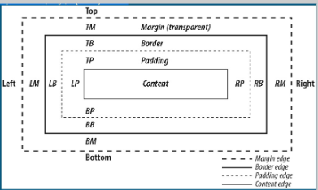

CSS, siglas en inglés para Hoja de estilos en cascada es un lenguaje utilizado, para especificar el aspecto
de una página web para diferentes dispositivos. Realmente, el HTML le dice al navegador la estructura de un documento,
mientras que el CSS le dice como renderizarlo.
CSS3 añade muchas capacidades nuevas a la especificación anterior.
aunque aun está en proceso de estandarizado. Los procesos que otorga CSS3 son excelentes bordes, fondos, color, textos,
transformaciones, transiciones, cajas, contenido, opacidad. son elementos esenciales para el diseño y su estructura para
cualquier web.
El nombre de hojas de estilo en cascada se debe a que los estilos aplicados se heredan de forma Jerárquica,
es decir que si aplicamos un font-size:10px; a la etiqueta body, todos los elementos de texto de nuestra página tendrán este
tamaño de letra a menos que les especifiquemos otro tamaño.
Maquetación básica
Width: Especifica el ancho que debe tener un elemento.
Height: Especifica el alto que debe tener un elemento.
Margin:
Especifica el espacio de separación que toma el elemento respecto a los demás. Se puede especificar por separado arriba, abajo,
izquierda y derecha.
Padding: Especifica un margen interno del objeto el cual aumenta su tamaño, este se puede especificar
por separado arriba, abajo, izquierda y derecha.

Imagen 5.1. Maquetación Básica CSS3. Creación propia.
Textos y fuentes
Color: Permite dar un color al elemento, este color se puede indicar mediante palabras preestablecidas como red, blue, etc.,
mediante combinación rgb como también por medio de valores de color hexadecimales.
Backgroud-color: Permite definir
el color de fondo que tendrá un objeto, al igual que color puede ser una palabra, una combinación rgb o un valor hexadecimal.
Backgroud-image: Permite definir una imagen como fondo del elemento.
Background-repeat: Permite determinar
como se adapta la imagen de fondo con respecto al tamaño del elemento.
box-shadow: Permite dar una sombra al elemento,
esta sombra puede ser interna y externa.
Listas
List-style-image: Permite elegir una imagen como viñeta a una lista.
List-style-type: Permite elegir el tipo de viñeta
que usara una lista (circulo, cuadrado, etc.
Bordes
border: Anade un borde al elemento.
border-color: Permte definir el color del borde.
border-style: Permite definir
el estilo del borde(solido, punteado, etc.
border-radius: Permite redondear las esquinas de un elemento.